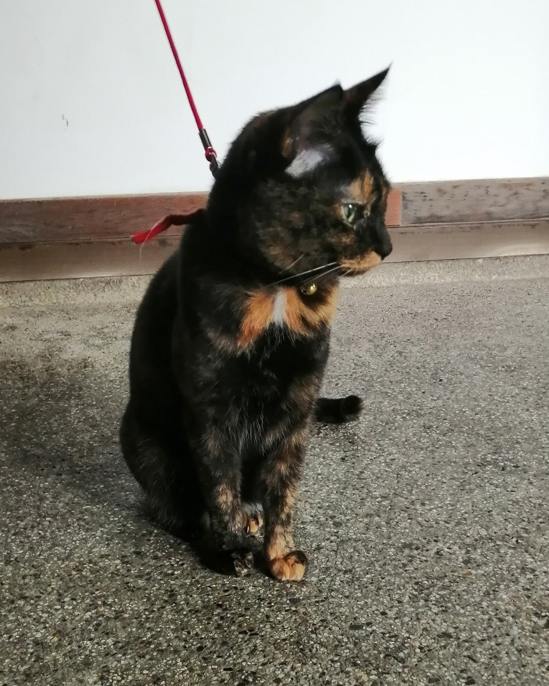

京都へGotoでごーとぅした話:二日目
京都旅行二日目！ 本当は鞍馬方面にも行きたかったのですが、叡山電鉄は台風の影響で鞍馬方面は一部運休していました。 さらに、お腹が絶不調だったのもあり、断念。今度リベンジしてやります。 トップの画像は、妙顕寺、さらさ西陣、今宮神社です。
午前の部
Gotoパワーで朝食オプションを追加したので、後の腹痛とは対称的に優雅な朝となりました。 卵めっちゃうまい。九条から地下鉄に乗って、御霊神社へ向かいました。 ここは応仁の乱勃発の地と言われており、確か細川氏が陣を構えたとされている場所です。 境内の社は立派でいろいろなものが置いてあり、非常に面白い場所でした。
続いて、妙顕寺にふらっと行ってみました。トップページの竹林はNescafeのCMでも使われたそう。確かにNescafe感。 枯山水は戦国時代が終わったかなといった雰囲気の庭で良かったのですが、脇で工事中だったのが辛かった。 本尊も立派ででっかい鐘？ のようなものもならせたので、良いところでした。 そのあとお昼時になったので、なんか映えると話題らしいさらさ西陣でカレーをいただきました。 おいしかったし、雰囲気も良かったんだが、お腹が辛かった。もう一度行ってゆったりしたくなるようなカフェでした。
午後の部
今回の旅で一番行きたかったところの大徳寺周辺。コロナや腹痛の影響で残念な部分は多かった。 龍源院と大仙院の2つの庭を見たのだが、どっちもとても落ち着く非常に良いところだった。 個人的には龍源院の石庭が非常に良くできてるなぁと思い、長々と座っていた気がする。 あと、龍源院の事務室には猫がいっぱいいます。どうも親がネグレクトをこちらでするらしく増えてしまうんだとか。 猫尊い。
そして、がちなお茶を飲みに皐盧庵茶舗へ行きました。 畳とかいろいろ緊張しますが、お硬い作法はいらないみたいです。 緑茶の淹れ方、抹茶の点て方を教わり（一杯目は作ってもらえる）、贅沢に和菓子3点と超旨い抹茶アイスをいただきました。 大徳寺納豆という、醤油っぽい豆を初めて食べました。なんとも珍味な感じがしましたが甘い物の合間にいれると非常に良い感じでした。 そして、高級な緑茶ってほんとすごいですね。旨味、甘みなどの情報がぶわっと押し寄せて、香りが抜けてくので骨抜きにされます。もっと飲みたい。 ちなみに、茶葉の生産も自分で行っているようで、こだわりが半端ない。二日目で最も良かったです。
午後の部を超え、延長戦へ
順番を変えてしょうかいしましたが、お茶を飲んで大仙院に行った後は今宮神社に向かいました。 朱色の鳥居、本殿、門といった京都らしい華やかで映えるところだった。 手水舎が綺麗とあったが、コロナよ……、手水舎はしまっている！ 残念。 参道らしき場所でなにか名物らしいあぶり餅を売っていたが、お腹が駄目だった。食べたかった。
ここで、時刻は16:00。 京都の寺社仏閣は大体17:00で閉まるので、北上してもどこもいけないこととなり、消化不良感が拭えなかった。叡山電鉄も乗れないし。 というわけで、私鉄に乗り行こうという突発な思いつきで電車に乗りに行きました。電車は夜でも動いてる、最高。 出町柳から京阪に乗るついでに鴨川デルタへ。あそこ不思議なところですね。 人間が河原に行儀よく積極的に座りに来る日本唯一なところな気がする。
というわけで、3000系特急淀屋橋行に乗車。 一番前の運転手の後ろの席をゲットしました。 しかし、シャッターが下りており、唸っていたらトンネル出ると自動で空きました。 ボックスシートになっていたりと、もう京阪めっちゃ好きですわ。 一番前が動力車だし。京阪ツアー行きたい。
そして、どうしようか迷ったあげく、京橋-大阪間で近郊区間の一周をすることにしました。 国鉄時代の103系や205系、最新鋭の最高の車両325系などバラエティ豊かな車両に乗り、梅田でたこやきを買いました。 最後ということで、おばちゃんにおまけしていただきました。ありがとう、一撃で大阪に惚れました。
阪急に乗って、京都へ帰ります。阪急の大阪梅田すごいですね。 あの規模の頭端式ホームは絶滅危惧種な気がします。 夜遅くに乗車したので、景色はあまり見えませんが、沿線の雰囲気を味わうことができました。
このとき、もう10時くらいでした。 宿に帰りつつあったのですが、体調が万全になってきたので、どこかに行こうという気分になりました。 そこで、宿から徒歩20分の伏見稲荷大社に行くこととしました。大人の修学旅行ならではですね。 コロナ禍の平日の真夜中なのに、若い男女のグループやカップルがそこそこいました。 ぼっちを内心で嘲笑っていたに違いありません。 ……冗談はさておき、ナイトモードを初めて使ったのですが、面白いとり方でしたね。 段々露光が強くなって、その画像をうまく処理してるんでしょうが、よく出来てる。
こんな感じで、二日目はいろいろと私らしい旅になったかなぁという印象です。 叡山電鉄と鞍馬はほんと行きたいが、大人になったら川床でいいもの食べてみたいので、そのときのリベンジでいいかなぁとも思いました。